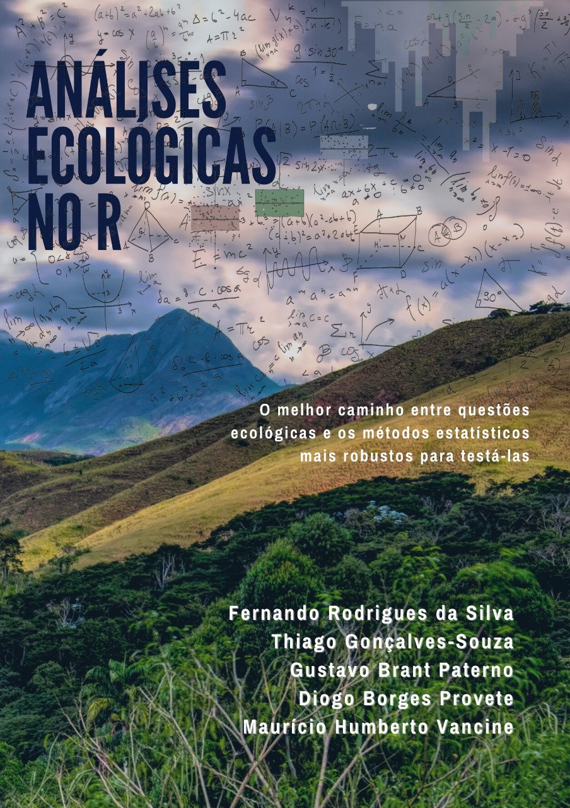

Bem-vindos
 Essa é a página online do livro Análises Ecológicas no R. Este livro contém 15 capítulos que vão desde como baixar e instalar o R, passando por manipulação de dados, análises de diversidade, estatística básica, métodos multidimensionais e visualização de dados geoespaciais. Este é um material introdutório destinado principalmente a estudantes de graduação e cursos de pós-graduação em ecologia e áreas correlatas. Esperamos que ele seja utilizado tanto por quem quer se aprofundar em análises comumente utilizadas em ecologia, quanto por quem não tem nenhuma ou poucas habilidades quantitativas. Este livro é um dos poucos, senão único, material em português com essa abrangência e visa ser o principal manual de entrada para aprendizagem de R e suas aplicações em ecologia, conservação e ciências ambientais. Para isso, propomos uma estratégia que facilite a escolha do teste estatístico, por meio da seleção de questões/hipóteses claras e da ligação dessas hipóteses com a teoria e o método. Ainda, cada capítulo contém exercícios propostos, e suas soluções, recomendações de literatura e links especializados para cada capítulo do livro, e uma sessão sobre como utilizar o livro em grupos de discussão e sala de aula.
A versão on-line está disponível gratuitamente e o código fonte necessário para reproduzir todo o conteúdo do livro está depositado no Github.
Este livro foi escrito em Rmarkdown e compilado utilizando o pacote bookdown.
Como contribuir
Caso encontre erros no livro ou tenha sugestões para melhorar seu conteúdo, abra um chamado no repositório (é necessário que você se cadastre no GitHub) e descreva o problema encontrado ou apresente suas sugestões. Caso encontre erros de digitação, você pode corrigi-los clicando em “Edite esta página” na barra lateral direita. Depois de corrigir os erros, submeta um pull request pelo Github. Sua contribuição é muito importante e bem-vinda para que possamos aprimorar o conteúdo do livro para as próximas edições
Suporte ao projeto
Mesmo com a explosão de ferramentas de tradução automática, bem como livros, blogs e tutoriais, ainda temos a impressão de que este material é necessário e poderá impactar positivamente o ensino de estatística para discentes e profissionais de ecologia e áreas correlatas. Por esse motivo, criamos um projeto para atualizar e ampliar o livro ao longo do tempo. A ideia mais interessante é que não pretendemos investir somente na produção do livro, mas também oferecer cursos em universidades e regiões com pouco ou nenhum investimento, criar podcasts e vídeos no YouTube, entre outras ideias.
É importante ressaltar que tudo isso é (e será!) feito de graça, em um projeto totalmente aberto e sem fins lucrativos. Além disso, para manter essa ideia funcionando, temos a necessidade de adquirir computadores e outros equipamentos. Assim, para que esse nosso sonho vire realidade, usuários(as) que têm interesse em ajudar o projeto podem fazê-lo de diferentes formas.
Você pode recomendar o livro para outras pessoas e dizendo que essa iniciativa existe
Você divulgar o livro e o projeto em suas redes sociais por meio da hashtag
#ecologiaRpara ajudar a dar visibilidadeSe você é divulgador(a) científico(a) e pretende usar nosso livro em seu canal, fale brevemente do nosso projeto e indique para seus seguidores(as)
Você pode citar ou linkar o livro em seus trabalhos acadêmicos
Marcando com um estretla (‘Starring’) o repositório GitHub livro_aer
Você pode adquirir o livro físico e, desse modo, ajudar com os direitos autorais que retornam para o projeto Clube dos Autores e Amazon
Se você tem condições de “adotar” uma universidade, é possível adquirir o livro físico nas plataformas indicadas, comprar o livro e indicar a biblioteca onde o livro será entregue/depositado
Você pode fazer doações diretas, em qualquer quantia, para o Pix
analisesecologicasnor@gmail.comou via PayPal (para Maurício Humberto Vancine, um dos coautores)
Observação: O valor arrecadado com a venda dos livros físicos e doações, bom como utilizaremos esses valores sempre serão informados no site do livro e nas mídias sociais com a hashtag #ecologiaR.